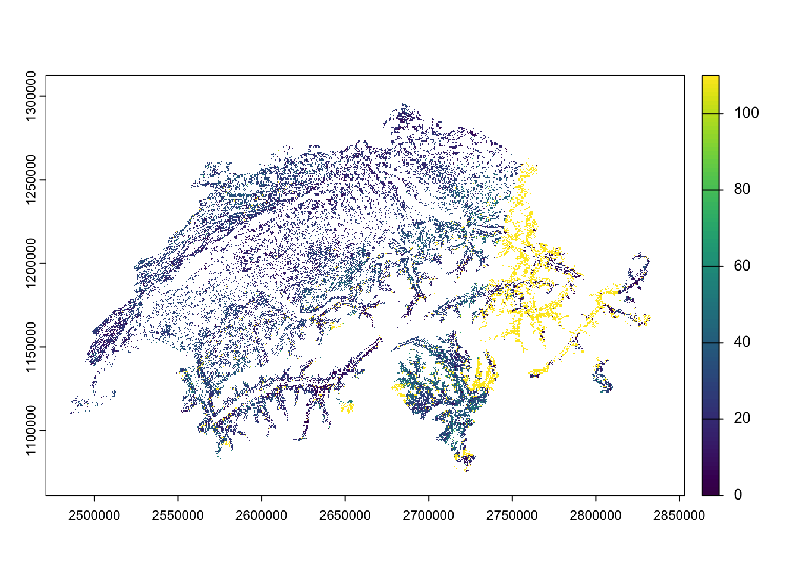

library(ggplot2)
library(readr)
library(lubridate)
library(dplyr)6 Data variety
Chapter lead author: Koen Hufkens
6.1 Learning objectives
As a scientist you will encounter a variety of data (formats). In this section, you will learn some of the most common formats, their structure, and the advantages and disadvantages of using a particular data format. Only singular files are considered in this section, and databases are not covered although some files (formats) might have a mixed use.
More and more data moves toward a cloud server-based model where data is queried from an online database using an Application Programming Interface (API). Although the explicit use of databases is not covered, you will learn basic API usage to query data which is not represented as a file.
In this chapter you will learn:
- how to recognize data and file formats
- understand data and file format limitations
- manipulation wise
- content wise
- how to read and/or write data in a particular file format
- how to query an API and store its data locally
6.2 Setup
In this Chapter, we will need the following libraries
6.3 Tutorial
6.3.1 Files and file formats
6.3.1.1 File extensions
In order to manipulate data and make some distinctions on what a data file might contain, files carry a particular file format extension. These file extensions denote the intended content and use of a particular file.
For example, a file ending in .txt suggests that it contains text. A file extension allows you, or a computer, to anticipate the content of a file without opening the file.
File extensions are therefore an important tool in assessing what data you are dealing with, and what tools you will need to manipulate (read and write) the data.
NOTE: File extensions can be changed. In some cases, the file extension does not represent the content of the data contained within the file.
TIP: If a file doesn’t read, it is always wise to try to open the file in a text editor and check the first few lines to verify if the data has a structure that corresponds to the file extension.
# On a linux/macos system you can use the terminal command (using # the language bash) to show the first couple lines of a file head your_file # alternatively you can show the last few lines # of a file using tail your_file
6.3.1.2 Human-readable data
One of the most important distinctions in data formats falls along the line of it being human-readable or not. Human-readable data is, as the term specifies, made up of normal text characters. Human-readable text has the advantage that it is easily read and edited using conventional text editors. This convenience comes at the cost of the files not being compressed in any way, and file sizes can become unnecessarily large. However, for many applications where file sizes are limited (<50MB), human-readable formats are the preferred option. Most human-readable data falls in two broad categories, tabular data and structured data.
Tabular data
Often, human-readable formats provide data in tabular form using a consistent delimiter. This delimiter is a character separating columns of a table.
column_one, column_two, column_three
1, 2, 3
1, 2, 3
1, 2, 3Common delimiters in this context are the comma (,), as shown in the above example. A file with this particular format often carries the comma-separated values file extension (*.csv). Other delimiters are the tabulation (tab) character. Files with tab delimited values have the *.tsv format.
TIP: File extensions aren’t always a true indication of the delimiter used. For example,
.txtfiles often contain comma or tab separated data. If reading a file using a particular delimiter fails it is best to check the first few lines of a file.
Structured data
Tabular data is row and column-oriented and therefore doesn’t allow complex structured content, e.g. tables within tables. This issue is sidestepped by the JSON format. The JSON format uses attribute-value pairs to store data, and is therefore more flexible in terms of accommodating varying data structures. Below, you see an example of details describing a person, with entries being fo varying length and data types.
{
"firstName": "John",
"lastName": "Smith",
"isAlive": true,
"age": 27,
"address": {
"streetAddress": "21 2nd Street",
"city": "New York",
"state": "NY",
"postalCode": "10021-3100"
},
"phoneNumbers": [
{
"type": "home",
"number": "212 555-1234"
},
{
"type": "office",
"number": "646 555-4567"
}
],
"children": [
"Catherine",
"Thomas",
"Trevor"
],
"spouse": null
}NOTE: Despite being human-readable, a JSON file is considerably harder to read than a comma separated file. Editing such a file is therefore more prone to errors if not automated.
Other human-readable structured data formats include the eXtensible Markup Language (XML), which is commonly used in web infrastructure. XML is used for storing, transmitting, and reconstructing arbitrary data but uses (text) markup instead of attribute-value pairs.
<note>
<to>Tove</to>
<from>Jani</from>
<heading>Reminder</heading>
<body>Don't forget me this weekend!</body>
</note>6.3.1.3 Writing and reading human-readable files in R
There are a number of ways to read human-readable formats into an R work environment. Here the basic approaches are listed, in particular reading CSV and JSON data.
Large volumes of data are available as CSV files or similar. Understanding how to read in such data into a programming environment is key. In this context the read.table() function is a general purpose tool to read in text data. Depending on the format, additional meta-data or comments, and certain parameters need to be specified.
Its counterpart is a function to write human-readable data to file, called - you guessed it - write.table(). Again, parameters are required for maximum control over how things are written to file, by default though data are separated by a single empty space ” “, not a comma.
Note: In Chapter 4, we used the {readr} (tidyverse) function
read_csv(). It serves the same purpose asread.csv(), but is faster and reads data into a tidyverse-data frame (a tibble) which has some useful additional characteristics, on top of a common R data frame. For particularly large data, you may consider even better solutions for fast reading, see here.
Below, you find and example in which a file is written to a temporary location, and read in again using the above mentioned functions.
# create a data frame with demo data
df <- data.frame(
col_1 = c("a", "b", "c"),
col_2 = c("d", "e", "f"),
col_3 = c(1,2,3)
)
# write table as CSV to disk
write.table(
x = df,
file = file.path(tempdir(), "your_file.csv"),
sep = ",",
row.names = FALSE
)
# Read a CSV file
df <- read.table(
file.path(tempdir(), "your_file.csv"),
header = TRUE,
sep = ","
)
# help files of both functions can be accessed by
# typing ?write.table or ?read.table in the R consoleIn this example, a data frame is generated with three columns. This file is then written to a temporary file in the temporary file directory tempdir(). Here, tempdir() returns the location of the temporary R directory, which you can use to store intermediate files.
We use the file.path() function to combine the path (tempdir()) with the file name (your_file.csv). Using file.path() is good practice as directory structures are denoted differently between operating systems, e.g., using a backslash (\) on Windows vs. a slash (/) on Unix-based systems (Linux/macOS). The file.path() function ensures that the correct directory separator is used.
Note that in this command, we have to manually set the separator (sep = ",") and whether a header is present (header = TRUE). Depending on the content of a file, you will have to alter these parameters. Additional parameters of the read.table() function allow you to specify comment characters, skip empty lines, etc.
Similar to this simple CSV file, we can generate and read JSON files. For this, we do need an additional library, as default R install does not provide this capability. However, the rest of the example follows the above workflow.
# we'll re-use the data frame as generated for the CSV
# example, so walk through the above example if you
# skipped ahead
# load the library
library("jsonlite")# write the file to a temporary location
jsonlite::write_json(
x = df,
path = file.path(tempdir(), "your_json_file.json")
)# read the freshly generated json file
df_json <- jsonlite::read_json(
file.path(tempdir(), "your_json_file.json"),
simplifyVector = TRUE
)
# check if the two data sets
# are identical (they should be)
identical(df, df_json)[1] TRUENote that the reading and writing JSON data is easier, as the structure of the data (e.g., field separators) are more strictly defined. While reading the data, we use the simplifyVector argument to return a data frame rather than a nested list. This works as our data has a tabular structure, but this might not always be the case. Finally, we compare the original data with the data read in using identical().
TIP: In calling the external library we use the
::notation. Although by loading the library withlibrary()makes alljsonlitefunctions available, the explicit referencing of the origin of the function makes debugging often easier.
6.3.1.4 Binary data
All digital data which is not represented as text characters can be considered binary data. Binary data can vary in its content from an executable, which runs a program, to the digital representation of an image (jpeg images). However, in all cases, the data is represented as bytes (made of eight bits) and not text characters.
One of the advantages of binary data is that it is an efficient representation of data, saving space. This comes at the cost of requiring a dedicated software, other than a text editor, to manipulate the data. For example, digital images in a binary format require image manipulation software.
More so than human-readable data, the file format (extension) determines how to treat the data. Knowing common data formats and their use cases is therefore key.
6.3.1.5 Common file formats
Environmental sciences have particular file formats which dominate the field. Some of these file formats relate to the content of the data, some of these formats are legacy formats due to the history of the field itself. Here we will list some of the most common formats you will encounter.
| File format (extension) | Format description | Use case | R Library |
|---|---|---|---|
| *.csv | comma separated tabular data | General purpose flat files with row and column oriented data | base R |
| *.txt | tabular data with various delimiters | General purpose flat files with row and column oriented data | base R |
| *.json | structured human-readable data | General purpose data format. Often used in web application. Has geospatial extensions (geojson). | jsonlite |
| *.nc | NetCDF data array data | Array-oriented data (matrices with > 2 dimensions). Commonly used to store climate data or model outputs. Alternative to HDF data. | ncdf4, terra, raster |
| *.hdf | HDF array data | Array-oriented data (matrices with > 2 dimensions). Commonly used to store Earth observation data. | hdf |
| *.tiff, *.geotiff | Geotiff multi-dimensional raster data (see below) | Layered (3D) raster (image) data. Commonly used to represent spatial (raster) data. | terra, raster |
| *.shp | Shapefile of vector data (see below) | Common vector based geospatial data. Used to describe data which can be captured by location/shape and attribute values. | sp, sf |
6.3.2 Meta-data
Meta-data is data that is associated with the main data file and is key to understanding the file content and the context of the data. In some cases, you will find this data only as a general description referencing the file(s) itself. In other cases, meta-data is included in the file itself.
For example, many tabular CSV data files contain a header specifying the content of each column, and at times a couple of lines of data specifying the content of the file itself - or context within which the data should be considered.
# This is meta-data associated with the tabular CSV file
# for which the data is listed below.
#
# In addition to some meta-data, the first row of the data
# contains the column header data
column_one, column_two, column_three
1, 2, 3
1, 2, 3
1, 2, 3In the case of binary files it will not be possible to read the meta-data directly as plain text. In this case, specific commands can be used to read the meta-data included in a file. The example below shows how you would list the meta-data of a GeoTiff file using the bash.
# list geospatial data for a geotiff file
gdalinfo your_geotiff.tiffTIP: Always keep track of your meta-data by including it, if possible, in the file itself. If this is not possible, meta data is often provided in a file called
README. Meta-data is key in making science reproducible and guaranteeing consistency between projects. Key meta-data to retain are:
the source of your data (URL, manuscript, DOI)
the date when the data was downloaded
manipulations on the data before using the data in a final workflow
Meta-data of data read into R can be accessed by printing the object itself, i.e., calling the object in the console. If it is a simple table, the first lines of the table will be shown. If it is a more complex object, the meta data will be output as a formatted statement. You can also use the str() or summary() functions to summarize data and meta-data.
6.3.3 Spatial data representation
Environmental data often has an explicit spatial and temporal component. For example, climate data is often represented as 2D maps which vary over time. This spatial data requires an additional level of understanding of commonly used data formats and structures.
In general, we can distinguish two important data models when dealing with spatial data, the raster and vector data model. Both data have their typical file formats (see above) and particular use cases. The definition of these formats, optimization of storage and math/logic on such data are the topic of Geographic Information System (GIS) science and beyond the scope of this course. We refer to other elective GIS courses for a greater understanding of these details. However, a basic understanding of both raster and vector data is provided here.
6.3.3.1 Raster data model
The basic raster model represents geographic (2D) continuous data as a two-dimensional array, where each position has a geographic (x, y) coordinate, a cell size (or resolution) and a given extent. Using this definition, any image adheres to the raster model. However, in most geographic applications, coordinates are referenced and correspond to a geographic position, e.g., a particular latitude and longitude. Often, the model is expanded with a time dimension, stacking various two-dimensional arrays into a three-dimensional array.
The raster data model is common for all data sources which use either imaging sensors, such as satellites or unmanned aerial vehicles (UAVs), or outputs of models that operate on a cartesian grid, including most climate and numerical weather prediction models.
Additional meta data stores both the geographic reference system, the definition and format of the time information, and well as other data which might be helpful to end users (e.g., variable units). Within the environmental sciences, NetCDF and GeoTiff are common raster data file formats.
6.3.3.2 Vector data model
The vector data model, in contrast to the raster data model, describes (unbound) features using a geometry (location, shape) using coordinates and linked feature attributes. Geometries can be points, lines, polygons, or even volumes.
Vector data does not have a defined resolution, making them scale-independent. This makes the vector data model ideal for discrete features such as roads or building outlines. Conversely, vector data is poorly suited for continuous data.
Conversions between the vector and raster model are possible, but limitations apply. For example, when converting vector data to raster data a resolution needs to be specified, as you lose scale independence of the vector format. Conversions from raster to vector are similarly limited by the original resolution of the raster data. In this course we will focus on raster data only, the most common format within the context of data science.
6.3.4 Online data sources
The sections above assume that you have inherited some data from someone, or have data files on disk (in a particular format). Yet, most of the time, gathering data is the first step in any analysis. Depending on where data is hosted you can simply download data through your web browser or use the internal download.file() R function to grab data.
Today, many of the data described in previous sections are warehoused in large cloud facilities. These data (and their underlying data formats) are stored in large databases and displayed through various applications. For example, Google Maps displays remote sensing (satellite) raster image data in addition to street level vector based labels. These services allow you to access the underlying (original) data using an API, hence programmatically using code. Mastering the use of these services has become key in gathering research data.
6.3.4.1 Direct downloads
Before diving into a description of APIs, we remind you that some file reading functions in R are web-aware, and can not only read local files but also remote ones (i.e., URLs). Getting ahead of ourselves a bit (see tutorials below), the example code shows you how to read the content of a URL directly into your R environment.
Although using this functionality isn’t equivalent to using an API, the concept is the same. I.e., you load a remote data source.
# define a URL with data of interest
# in this case annual mean CO2 levels at Mauna Loa
url <- "https://gml.noaa.gov/webdata/ccgg/trends/co2/co2_annmean_mlo.csv"
# read in the data directly from URL
df <- read.table(
url,
header = TRUE,
sep = ","
)6.3.4.2 APIs
Web-based Application Programming Interfaces (APIs) offer a way to specify the scope of the returned data, and ultimately, the processing which goes on behind the scene in response to a (data) query. APIs are a way to, in a limited way, control a remote server to execute a certain (data) action. In most (RESTful) APIs, such query takes the form of an HTTP URL via an URL-encoded scheme using an API endpoint (or base URL).
To reduce some of the complexity of APIs, it is common that a wrapper is written around an API in the language of choice (e.g., R, Python). These dedicated API libraries make it easier to access data and limit coding overhead.
Dedicated API libraries
As an example of a dedicated library, we use the {MODISTools} R package which queries remote sensing data generated by the MODIS remote sensing (satellite) mission from the Oak Ridge National Laboratories data archive.
# load the library
library("MODISTools")
# list all available products
products <- MODISTools::mt_products()
# print the first few lines
# of available products
print(head(products)) product
1 Daymet
2 ECO4ESIPTJPL
3 ECO4WUE
4 GEDI03
5 GEDI04_B
6 MCD12Q1
description
1 Daily Surface Weather Data (Daymet) on a 1-km Grid for North America, Version 4 R1
2 ECOSTRESS Evaporative Stress Index PT-JPL (ESI) Daily L4 Global 70 m
3 ECOSTRESS Water Use Efficiency (WUE) Daily L4 Global 70 m
4 GEDI Gridded Land Surface Metrics (LSM) L3 1km EASE-Grid, Version 2
5 GEDI Gridded Aboveground Biomass Density (AGBD) L4B 1km EASE-Grid, Version 2.1
6 MODIS/Terra+Aqua Land Cover Type (LC) Yearly L3 Global 500 m SIN Grid
frequency resolution_meters
1 1 day 1000
2 Varies 70
3 Varies 70
4 One time 1000
5 One time 1000
6 1 year 500# download a demo dataset
# specifying a location, a product,
# a band (subset of the product)
# and a date range and a geographic
# area (1 km above/below and left/right).
# Data is returned internally and the
# progress bar of the download is not shown.
subset <- MODISTools::mt_subset(
product = "MOD11A2",
lat = 40,
lon = -110,
band = "LST_Day_1km",
start = "2004-01-01",
end = "2004-02-01",
km_lr = 1,
km_ab = 1,
internal = TRUE,
progress = FALSE
)
# print the dowloaded data
print(head(subset)) xllcorner yllcorner cellsize nrows ncols band units
1.1 -9370963.05 4445948.79 926.625433055834 3 3 LST_Day_1km Kelvin
2.1 -9370963.05 4445948.79 926.625433055834 3 3 LST_Day_1km Kelvin
3.1 -9370963.05 4445948.79 926.625433055834 3 3 LST_Day_1km Kelvin
4.1 -9370963.05 4445948.79 926.625433055834 3 3 LST_Day_1km Kelvin
1.2 -9370963.05 4445948.79 926.625433055834 3 3 LST_Day_1km Kelvin
2.2 -9370963.05 4445948.79 926.625433055834 3 3 LST_Day_1km Kelvin
scale latitude longitude site product start end complete
1.1 0.02 40 -110 sitename MOD11A2 2004-01-01 2004-02-01 TRUE
2.1 0.02 40 -110 sitename MOD11A2 2004-01-01 2004-02-01 TRUE
3.1 0.02 40 -110 sitename MOD11A2 2004-01-01 2004-02-01 TRUE
4.1 0.02 40 -110 sitename MOD11A2 2004-01-01 2004-02-01 TRUE
1.2 0.02 40 -110 sitename MOD11A2 2004-01-01 2004-02-01 TRUE
2.2 0.02 40 -110 sitename MOD11A2 2004-01-01 2004-02-01 TRUE
modis_date calendar_date tile proc_date pixel value
1.1 A2004001 2004-01-01 h09v05 2020168005635 1 13148
2.1 A2004009 2004-01-09 h09v05 2020168010833 1 13160
3.1 A2004017 2004-01-17 h09v05 2020168012220 1 13398
4.1 A2004025 2004-01-25 h09v05 2020168013617 1 13412
1.2 A2004001 2004-01-01 h09v05 2020168005635 2 13153
2.2 A2004009 2004-01-09 h09v05 2020168010833 2 13140A detailed description of all functions of the {MODISTools} R package is beyond the scope of this course. However, the listed command show you what a dedicated API package does. It is a shortcut to functional elements of an API. For example mt_products() allows you to quickly list all products without any knowledge of an API URL. Although more complex, as requiring parameters, the mt_subset() routine allows you to query remote sensing data for a single location (specified with a latitude lat and longitude lon), and a given date range (e.g., start, end parameters), a physical extent (in km left-right and above-below).
GET
Depending on your data source, you will either need to rely on a dedicated R package to query the API or study the API documentation. The general scheme for using an API follows the use of the GET() command of the {httr} R library. You define a query using API parameters, as a named list, and then use a GET() statement to download the data from the endpoint (url).
# formulate a named list query to pass to httr
query <- list(
"argument" = "2",
"another_argument" = "3"
)
# The URL of the API (varies per product / param)
url <- "https://your.service.endpoint.com"
# download data using the
# API endpoint and query data
# status variable will include if
# the download was successful or not
# the write_disk() function captures
# data if available and writes it to
# disk
status <- httr::GET(
url = url,
query = query,
httr::write_disk(
path = "/where/to/store/data/filename.ext",
overwrite = TRUE
)
)Below, we provide an example of using the GET command to download data from the Regridded Harmonized World Soil Database (v1.2) as hosted on the Oak Ridge National Laboratory computer infrastructure. In this case we download a subset of a global map of topsoil sand content (T_SAND).
# set API URL endpoint
# for the total sand content
url <- "https://thredds.daac.ornl.gov/thredds/ncss/ornldaac/1247/T_SAND.nc4"
# formulate query to pass to httr
query <- list(
"var" = "T_SAND",
"south" = 32,
"west" = -81,
"east" = -80,
"north" = 34,
"disableProjSubset" = "on",
"horizStride" = 1,
"accept" = "netcdf4"
)
# download data using the
# API endpoint and query data
status <- httr::GET(
url = url,
query = query,
httr::write_disk(
path = file.path(tempdir(), "T_SAND.nc"),
overwrite = TRUE
)
)
# to visualize the data
# we need to load the {terra}
# library
library("terra")Warning: package 'terra' was built under R version 4.4.1terra 1.8.21sand <- terra::rast(file.path(tempdir(), "T_SAND.nc"))
terra::plot(sand)
Authentication
Depending on the API, authentication using a user name and a key or password is required. Then, the template should be slightly altered to accommodate for these requirements. Note that instead of the GET() command we use POST() as we need to post some authentication data before we can get the data in return.
# an authenticated API query
status <- httr::POST(
url = url,
httr::authenticate(user, key),
httr::add_headers("Accept" = "application/json",
"Content-Type" = "application/json"),
body = query,
encode = "json"
)6.4 Exercises
Files and file formats
Reading and writing human-readable files
While not leaving your R session, download and open the files at the following locations:
https://raw.githubusercontent.com/geco-bern/agds_book/refs/heads/main/book/data/demo_1.csv
https://raw.githubusercontent.com/geco-bern/agds_book/refs/heads/main/book/data/demo_2.csv
https://raw.githubusercontent.com/geco-bern/agds_book/refs/heads/main/book/data/demo_3.csvOnce loaded into your R environment, combine and save all data as a temporary CSV file. Read in the new temporary CSV file, and save it as a JSON file in your current working directory.
Reading and writing binary files
Download and open the following file:
https://raw.githubusercontent.com/geco-bern/agds_book/refs/heads/main/book/data/demo_data.nc- What file format are we dealing with?
- What library would you use to read this kind of data?
- What does this file contain?
- Write this file to disk in a different geospatial format you desire (use the R documentation of the library used to read the file and the chapter information).
- Download and open the following file:
https://raw.githubusercontent.com/geco-bern/agds_book/refs/heads/main/book/data/demo_data.tif. Does this data seem familiar, and how can you tell? What are your conclusions?
API use
GET
- Download the HWSD total sand content data for the extent of Switzerland following the tutorial example. Visualize/plot the data as a simple map.
- Download the HWSD topsoil silt content for the extent of Switzerland.
6.4.0.1 Dedicated library
- Use the {hwsdr} library (a dedicated package for the API) to download the same data. How does this compare to the previous code written?
- List how many data products there are on the ORNL MODIS data repository.
- Download the MODIS land cover map for the canton of Bern.